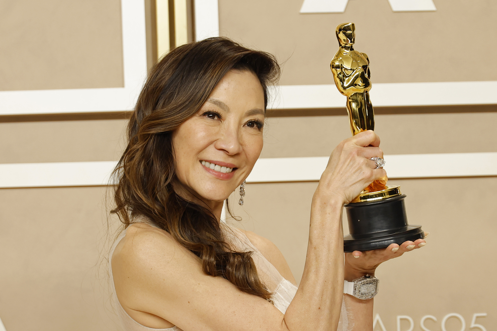
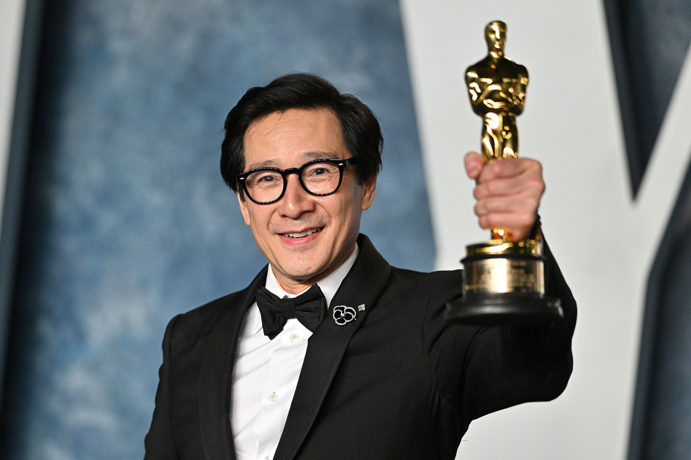
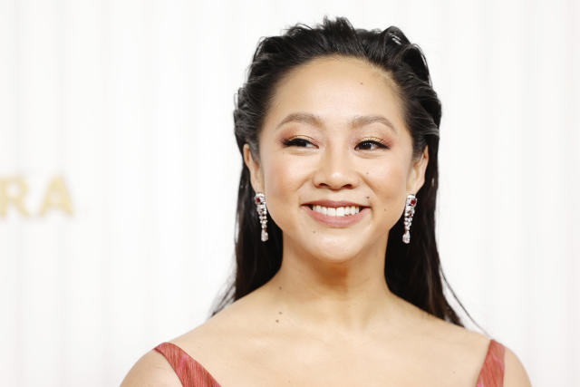

O filme Tudo em Todo o Lugar ao Mesmo Tempo, lançado no ano de 2022 e feito pelo estúdio A24, é o filme mais premiado da história.
Tendo ganho sete estauetas no último Oscar, incluindo de melhor filme, ele já acumula 165 vitórias. Além do Oscar a produção também
foi premiada pelo Bafta, Globo de Ouro, Critic’s Choice Awards, SAG Awards, PAG Awards e mais.
| Nome | Idade | Personagem |
|---|---|---|
| Michelle Yeoh  | 60 anos | Evelyn Wang |
| Ke Huy Quan  | 51 anos | Waymond Wang |
| Stephanie Hsu  | 32 anos | Joy Wang/ Jabu Tupaki |